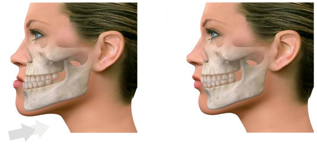

La odontología es la especialidad médica que se encarga de estudiar, tratar y prevenir las enfermedades típicas que padecen nuestros dientes, entre las más corrientes: la caries, la gingivitis o inflamación de las encías.
Sus especialistas tratan un montón de enfermedades, lesiones y defectos en la cabeza, cuello, cara, mandíbulas y tejidos duros y blandos de la boca.
Se especializa en el tratamiento de enfermedades dentales en niños y adolescentes.